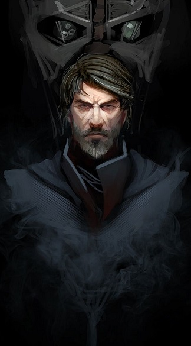

| Profil | |
|---|---|
| Origine | Unité (15) |
| Sexe | Homme |
| Profil | Guilde/ Organisation Renégate |

Commandant, dandy, golden boy, Leader des Fils d'Origine, Jeremiah Raynes était de tout cela.
Toutefois, comme dans ces tragédies qui ont su bercer la proto-histoire, il arrive qu'un homme né sous les meilleures augures dérape sur le marbre blanc de l'Histoire, se condamnant au déshonneur, au mépris. Ou pire : a l'oubli.
Voici la chronique de Jeremiah Raynes. Soyez témoins.
Sommaire
Unité
Prologue
Issu d'un mariage de convenance entre sa mère, issue de noblesse guildienne et un père industriel ayant percé dans les nouvelles technologies (voir Duracier), Jeremiah a connu une enfance somme toute convenable, bercée entre des nourrices *très* attentionnées et des serviteurs fidèles aux principes de la maison. Le génie de son père et le redoutable instinct financier de sa mère le conduisirent sans mal aux portes de l'Académie Galactique, le voyant devenir major de la promotion Mac Polar. C'est d'ailleurs dans celle-ci qu'il rencontra Allen Andersen, individu singulier en cela qu'il fut le deuxième de sa promotion alors que personne n'avait remarqué ses performances durant la formation académique. Le duo ainsi formé allait développer l'une des amitiés les plus fortes et les plus singulières de l'Histoire de la galaxie Unité.
Fraîchement diplômé, c'est sans encombre que Raynes fils obtint un bureau au sein de Raynes Corp, au sein de la trop visible Tour Obadiah (un édifice titanesque de plusieurs centaines d'étages). Hélas, pour le jeune Raynes, la bureaucratie et les incessantes fluctuations de marché passaient pour être d'un ennui mortel. En lui coulait l'envie de saisir des opportunités jamais offertes, de naviguer dans des eaux ou personne n'avait osé poser la moindre OPA, une terra incognita en laquelle il croyait secrètement et qu'il espérait découvrir un jour ou l'autre.
L'Histoire lui fit ce cadeau par intermédiaire de Cassandre, et par l’Éveil Galactique qui s'ensuivit.
Histoire Post-Eveil Galactique : Secteur 1
Toutes les grandes histoires commencent par la rencontre de deux événements n'étant pas supposés se croiser. Celle ci ne dérogera pas a la règle alors que les technologies spatiales atteignaient un niveau de pointe tel que l'idée d'envisager la conquête spatiale n'était plus une utopie de rêveur : Camden venait en effet de découvrir un système de propulsion subluminique permettant de transformer les convoyeurs limités aux échanges spatio-orbitaux seuls en convoyeurs lourds capable de franchir rapidement de longues distances spatiales en un rien de temps. Ces technologies, héritées de l'Académie spatiale fraîchement ressuscitée par Raynes lui-même a partir d'archives, arrivèrent à là même période que le signal d'Eveil, émanant d'une entité nommée Cassandre et indiquant une coordonnée inatteignable pour l'heure car trop éloignée. La technologie holographique avait connu son plein essor des siècles auparavant, et désormais, l'holographie 3D ne permettait plus de différencier l'original de la copie. Aussi ne furent il pas en mal de décoder le signal Cassandre pour envoyer une représentation de Raynes au sein d'un lieu solennel, héritage dévoyé d'une divinité perdue destiné à la rencontre des peuples sapients : l'Assemblee Galactique. La surprise de rencontrer autant de peuples, frères humains comme entités xenos, permit a Raynes de saisir toute la grandeur de la découverte : a partir de ce jour, Camden et des fils ne seraient plus les seuls, et il faudrait tres vite prendre place dans cette cour des miracles alors que déjà, l'Eveil faisait apparaître sur les cartes proches d'autres signaux de civilisations alentours. C'est ainsi que Raynes rencontra le leader pirate Gros Tarba, premier voisin systémique de Camden, qui allait par la suite prendre une importance considérable dans l'histoire personnelle du Leader.
Premiers Contacts : Tarba, Shae, Solveig et consorts
Gros Tarba était un pirate gouailleur qui crachait ses mots plus qu'il ne les disait. Mais au delà de son apparence de rustre Raynes sentit qu'avoir un pirate a ses côtés était plus sécurisant que de l'avoir face a lui, ou pire, dans son dos. C'est ainsi que les premiers échanges entre les deux voisins systémiques furent des plus cordiaux, malgré la barrière culturelle. Très vite, pareilles a autant de lucioles pointant dans le firmament, apparurent d'autres peuplades : Raynes rencontra d'autre d'éminentes membres de la Guilde, laissant supposer que les archives décelées sur sa planète devaient exister ailleurs que sur Camden. Il fit la connaissance de Louise Parcimonia, marchande amnésique en quête de son identité. Il rencontra également la Financière Shae, dont le mot juste et affûté soulignait une imparable volonté d'être en ce nouvel Univers. Alors que partout en Secteur 1 (nom donné à la zone spatiale délimitée par un impénétrable bouclier et clôturant certaines des civilisations ayant répondu à l'Eveil) de nouvelles alliances se formaient, Raynes rencontra la commandante Solveig, le (trop) jovial Zapp Bras, la mystérieuse communauté des Exilés, le militaire Sarkome ainsi que pléthore d'autres entité et civilisations qui allaient bientôt devenir la communauté du Secteur 1. Au fil du temps, Raynes sentit que les manœuvres de la commandante Solveig seraient un frein a son ascension, aussi entamèrent ils l'un l'autre un série de joutes verbales qui firent les délices des amateurs de mélodrames politiques.
Amor Stellae et départ
La quête révée d'Origine
Behemoth et le début du cauchemar
Nouveau besoins, nouvelle peau : La décadence des Fils d'Origine
La découverte d'Origine : Révélations
Un retour, une vengeance
Odyssée
L'obsession de la Guilde
 |
|---|
| Jeremiah Raynes, une fois revenu de son périple |